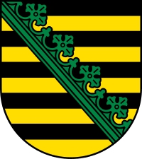

98448938497 Theodorata of Saxony
Blev ca 23 år.

Född:
omkring 765 Worms, Tyskland.
[1]
Död:
före 789 Worms, Tyskland.
[1]
Barn med
98448938496 Count Robert II de Hesbaye (770 - 807)
Barn:
Robert III de Wormsgau (785 - 832)
Personhistoria
Årtal
Ålder
Händelse
765?
Födelse omkring 765 Worms, Tyskland
[1]
<789
Död före 789 Worms, Tyskland
[1]
Källor
[1]
Wikipedia